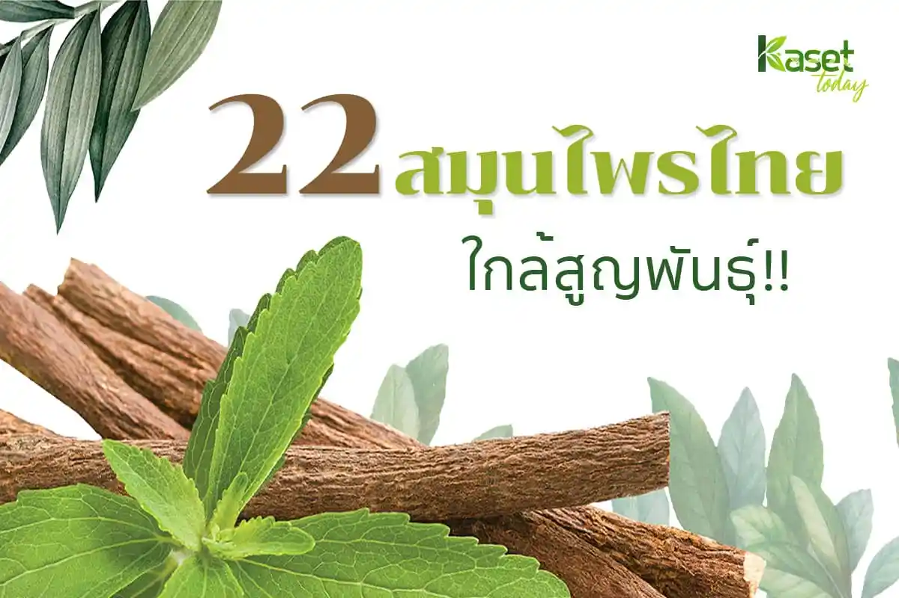
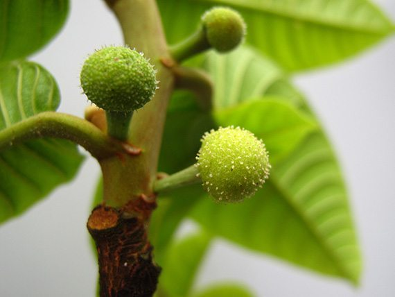
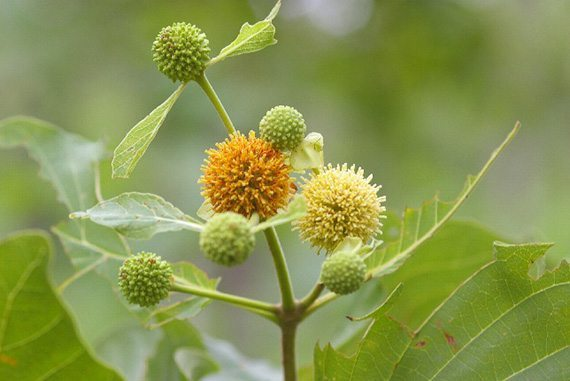

นายนันทศักดิ์ โชติชนะเดชาวงศ์ ผู้อำนวยการกองคุ้มครองภูมิปัญญาการแพทย์แผนไทย
และพื้นบ้านไทย กรมพัฒนาการแพทย์แผนไทยและการแพทย์ทางเลือกกระทรวงสาธารณสุข (สธ.)
กล่าวว่า ขณะนี้มีสมุนไพรไทย 22 ชนิด ที่เสี่ยงอาจจะสูญพันธุ์ได้
1. ถั่วดินโคก 2. เทพทาโร 3. มะตูมนิ่ม 4. มะหาด 5. เร่ว
6. หัวร้อยรู 7. กระทุ่มนา 8. ขันทองพยาบาท 9. จุกโรหินี 10. ชะเอมไทย
11. ชิงชี่ 12. ตับเต่า 13. นางแย้มป่า 14. ปลาไหลเผือก 15. พังคี
16. มะคังแดง 17. สะค้าน 18. สารภีป่า 19. อบเชยไทย 20. เฉียงพร้านางแอ
21. เถาเอ็นอ่อน และ 22. เปราะหอม
“ตามปกติแต่ละจังหวัดจะมีการจดทะเบียนรายชื่อสมุนไพรที่มีอยู่ในจังหวัดนั้นๆ แบ่งออกเป็น 3 ประเภท
คือ 1. สมุนไพรเพื่อการศึกษา 2. สมุนไพรพืชเศรษฐกิจ และ 3. สมุนไพรเสี่ยงอาจสูญพันธุ์
โดยจะมีคณะผู้เชี่ยวชาญเข้ามาจัดทำข้อมูลของสมุนไพรทั้ง 3 ประเภท
จากนั้นได้เลือกออกมาเป็น 22 ชนิด ที่เสี่ยงอาจจะสูญพันธุ์ เนื่องจากเป็นสมุนไพรที่เติบโตช้า เมื่อจะใช้ต้องใช้ทั้งต้น บางชนิดใช้ทั้งราก
และต้องใช้บ่อยจึงจะสามารถรักษาอาการได้” นายนันทศักดิ์ กล่าว
นายนันทศักดิ์ กล่าวว่า คณะกรรมการคุ้มครองและส่งเสริมภูมิปัญญาการแพทย์แผนไทยได้ประชุมหารือกัน
โดยเลือกสมุนไพร 6 ชนิดจาก 22 ชนิดขึ้นมา คือ ถั่วดินโคก หรือ พิษนาศน์ เทพทาโร มะตูมนิ่ม มะหาด เร่ว และ หัวร้อยรู
นอกจากนี้ ยังเสนอสมุนไพร “กระวาน” ขึ้นมาเป็นพิเศษด้วยอีกชนิดหนึ่ง เพื่อประกาศคุ้มครองและเป็นสมุนไพรที่ต้องควบคุม
โดยหากใครมีสมุนไพร 7 ตัวนี้อยู่ในครอบครองไม่ได้ถือว่ามีความผิด เพียงแต่ต้องแจ้งมาทาง สธ.
ให้รับทราบว่ามีอยู่เท่าใด เพื่อที่จะจัดทำแผนส่งเสริมการปลูกต่อไป เช่น บริษัทใดมีสมุนไพร 7 นี้อยู่ ใช้ผลิตยาไปเท่าใด
ต้องปลูกทดแทนเท่าใด เพื่อไม่ให้สูญพันธุ์ เป็นต้น
1.ถั่วดินโคก
สรรพคุณ : ช่วยลดไข้ในเด็ก ใช้ต้มกับน้ำดื่มเป็นยาบำรุงน้ำนมของสตรี
และใบนำมาฝนทาเป็นยาแก้ฝี
2.เทพทาโร
สรรพคุณ : แก้ไข้หวัด แก้ไอ อาการไอเรื้อรัง ตัวร้อน ออกหัด เนื้อไม้ใช้ปรุงเป็นยาหอมลม
รักษาท้องขึ้น อืดเฟ้อ จุกเสียด

3.มะตูมนิ่ม
สรรพคุณ : คนโบราณจะนำมาทำเป็นยาอายุวัฒนะ เพื่อบำรุงกำลัง บำรุงเพศ ชลอความแก่
ทำให้ผมหงอกช้า โดยการนำมาสผมกับกล้วยน้ำไทและน้ำผึ้ง ปั้นเป็นลูกกอนรับประทาน
เรียกตำรับยานี้ว่า “ลูกแปลกแม่”

4.มะหาด
สรรพคุณ : แก่นมีสรรพคุณเป็นยาแก้ลม เปลือกต้นสดนำมาต้มกับน้ำกินเป็นยาแก้ไข้

5.เร่ว
สรรพคุณ : ช่วยแก้อาการหืด,ไอ,คลื่นไส้อาเจียน รับประทานอาหารไม่ได้
ผลช่วยแก้เสมหะในลำคอ เมล็ดช่วยกัดเสมหะ

6.หัวร้อยรู
สรรพคุณ : ช่วยบำรุงหัวใจ หัว ใช้ตำกินเป็นยาขับพยาธิ

7.กระทุ่มนา
สรรพคุณ : ช่วยลดความดันโลหิต ใบและเปลือกต้นต้มกินเป็นยาแก้ไข้
ใช้อมกลั้วคอแก้อาการอักเสบของเยื่อเมือกในปาก

8.ขันทองพยาบาท
สรรพคุณ :ใช้เป็นยาบำรุงเหงือก รักษาเหงือกอักเสบ ทำให้ฟัน เหงือกแข็งแรง
ขับระดูร้าย แก้โรคตับ และถอนพิษ

9.จุกโรหินี
สรรพคุณ : ผลนำมาต้มกับน้ำดื่ม จะช่วยลดระดับน้ำตาลในเลือดได้ ช่วยแก้อาการอ่อนเพลีย
ช่วยบำรุงกำลัง รากนำมาเคี้ยวกับพลูช่วยแก้อาการไอ

10.ชะเอมไทย
สรรพคุณ : เปลือกต้นใช้ต้มกับน้ำดื่มช่วยแก้อาการไอ หากอาการไม่ดีขึ้นให้รับประทานติดต่อกัน 2-4 วัน
ช่วยขับเสมหะ แก้น้ำลายเหนียว

11.ชิงชี่
สรรพคุณ : ใบนำมาต้มดื่มเป็นยาแก้ไข้ รากใช้เป็นยาขับปัสสาวะ ช่วยทำให้มดลูกเข้าอู่

12.ตับเต่า
สรรพคุณ : เปลือกใช้เป็นยารักษาโรครำมะนาด น้ำต้มจากแก่นและรากมีสรรพคุณเป็นยาบำรุงปอด

13.นางแย้มป่า
สรรพคุณ : รากนางแย้มป่าใช้ต้มเป็นยาแก้ไข้ นอกจากนี้ยังช่วยรักษาลำไส้อักเสบ
ในตำรายาไทยใช้รากเป็นยาช่วยขับปัสสาวะ

14.ปลาไหลเผือก
สรรพคุณ : รากใช้เป็นยาบำรุงกำลัง บำรุงร่างกาย คนเดินป่านิยมกัน เพราะจะช่วยทำให้ร่างกายแข็งแรง
ช่วยคลายอาการปวดเมื่อย รากใช้เป็นยาขับพยาธิ

15.พังคี
สรรพคุณ : รากพังคีช่วยแก้อาการจุกเสียด แก้ท้องอืด ท้องเฟ้อ ปวดท้อง
รากใช้ตำประคบแก้อาการปวด

16.มะคังแดง
สรรพคุณ : เนื้อไม้มีรสเย็นเฝื่อน ใช้ต้มกับน้ำดื่มเป็นยาแก้เลือดลมเดินไม่สะดวก
แก้พิษโลหิตและน้ำเหลืองเปลือกต้นใช้ตำพอกแผลสดเพื่อห้ามเลือด

17.สะค้าน
สรรพคุณ : เครือ ใช้ประกอบอาหารช่วยเพิ่มรสเผ็ด ลำต้นใช้ใส่แกง ช่วยให้มีกลิ่นหอม

18.สารภีป่า
สรรพคุณ : ดอกมีสรรพคุณเป็นยาบำรุงหัวใจ ตำรายาไทยจะใช้เปลือกและดอกเป็นยาแก้ไข้ ดอกมีสารช่วยขยายหลอดลม
และช่วยขับลม เปลือกและดอกมีสรรพคุณเป็นยาแก้บิด

19.อบเชยไทย
สรรพคุณ :เป็นยาร้อนออกฤทธิ์ต่อไต ม้าม และกระเพาะปัสสาวะ ใช้เป็นยาบำรุงร่างกาย ทำให้ร่างกายอบอุ่น
ช่วยกระจายความเย็นในร่างกาย ทำให้เลือดหมุนเวียนดี

20.เฉียงพร้านางแอ
สรรพคุณ : ลำต้นใช้ต้มน้ำดื่มช่วยบำรุงร่างกาย ทำให้เจริญอาหารหรือใช้เป็นยาเจริญอาหารสำหรับสตรีหลังคลอดบุตร

21.เถาเอ็นอ่อน
สรรพคุณ : เป็นยาเย็น มีพิษ ออกฤทธิ์ต่อหัวใจและตับ ใช้เป็นยาฟอกเลือด ขับลมในลำไส้และในกระเพาะอาหาร
ทำให้ผายลมและเรอ ช่วยแก้อาการจุกเสียดแน่นท้อง

22.เปราะหอม
สรรพคุณ :ใช้เป็นยาแก้ปวดศีรษะ คลายเครียด ใช้เป็นยาบำรุงหัวใจ บำรุงประสาท ด้วยการใช้หัวผสมลงในยาหอม
หัวเปราะหอมนำมาต้มหรือชงกิน จะช่วยในการนอนหลับได้เป็นอย่างดี และยังช่วยลดความเครียดได้อีกด้วย
แหล่งอ้างอิง
https://kaset.today/2021/06/40-2/
https://mgronline.com/qol/detail/9600000005955
https://www.baanlaesuan.com/49504/plant-scoop/herb-2